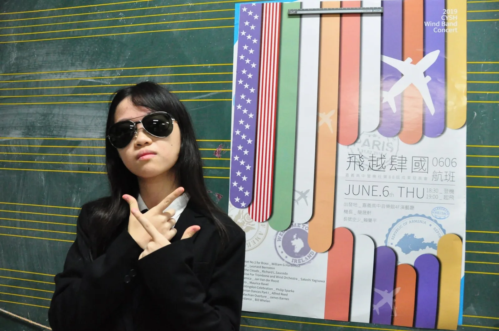

2019 年 5 月 26 日，嘉中管樂社在第 88 屆成果發表會《飛越肆國》前發布幹部介紹，介紹當時擔任譜務的蔡詠竹。這篇補登文章依當年公開貼文整理，保留原文中的學習歷程與成發前心情，也補上網站閱讀所需的脈絡。

從嘉義在地管樂班到嘉中音樂班
蔡詠竹是嘉義人。依當年幹部介紹，她自 2010 年就讀博愛國小管樂班時開始學習長笛，啟蒙於劉文姬老師與張仁傑老師；2014 年就讀北興國中管樂班，師事殷瑞霙老師及毛䕒婧老師；2017 年考取嘉義高中音樂班，主修長笛，當時師事邱利秦老師。
這段從國小、國中到嘉中的學習歷程，也呈現嘉義在地管樂教育一路銜接到高中音樂班與社團幹部工作的脈絡。107 學年度嘉義市學生音樂比賽中，她獲高中組長笛 A 組優等。
譜務工作與幹部任期
原文提到，期末將至，幹部任期也將結束；這一年不只讓她在管樂技術上有明顯成長，也更理解幕後工作的辛苦。譜務雖然不是最容易被觀眾看見的位置，卻牽涉排練進度、樂譜整理與演出準備，是樂團能否穩定運作的重要基礎。
幹部之間的互相扶持，帶領管樂社完成大大小小的演出，也在比賽中獲得特優第一。原文以「辛酸血淚史寫出來可以多的跟山一樣」形容這一年的投入，保留了當時學生幹部在任期尾聲回望整年工作的真實口吻。
成發前的最後一場演出
在卸任前的最後一場演出，就是第 88 屆成果發表會《飛越肆國》。原文寫道，半年多的籌備與練習，是希望帶來一場很棒的演出，讓成發的夜晚能用大家對音樂的熱情，帶領觀眾環遊世界。
回頭看這篇幹部介紹，它不只是單一幹部的介紹，也留下了 2019 年嘉中管樂社在成發前夕的準備狀態：有人在台前演奏，也有人在幕後整理樂譜、串起排練與演出，讓一場學生音樂會能完整成形。
本文依 2019 年 5 月 26 日嘉中管樂社公開「幹部介紹-譜務『蔡詠竹』」貼文整理補登；歷史資料以當年紀錄為準。蔡詠竹現已收錄於本站人物誌與校友名錄，完整資料可見人物頁。